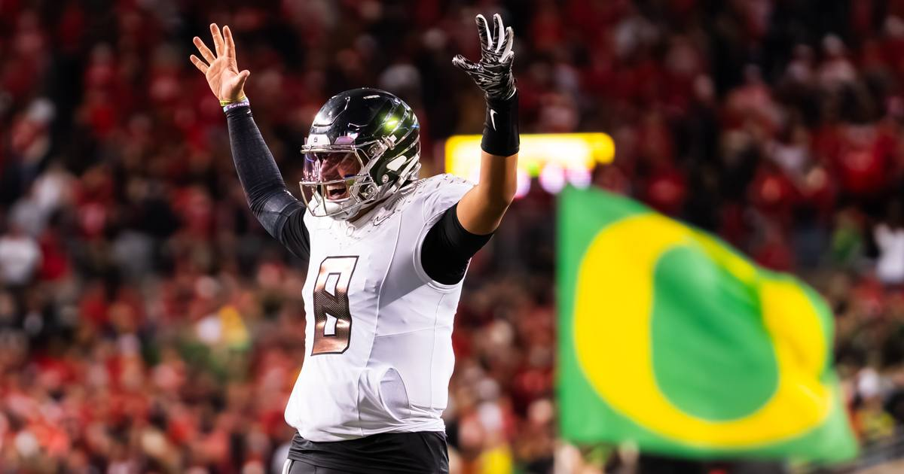

Oregon scores 38 straight to stun Ohio State 41-28
No. 23 Oregon trailed No. 12 Ohio State 14-0 in Columbus, then scored 38 unanswered points — sparked by a fake punt, a freshman interception, and a quarterback who wasn't supposed to be the starter — to win 41-28 and climb back into the Big Ten title race.

Disclosure: this post contains affiliate links. I earn a commission on qualifying purchases.
What happened
No. 23 Oregon beat No. 12 Ohio State 41-28 on Saturday at Ohio Stadium, and the score does not tell you how absurd this game was.
The Ducks fell behind 14-0 in the first quarter. Ohio State's offense was rolling, the Horseshoe was loud, and Oregon looked like a team that was about to get run out of Columbus. Then the Ducks scored 38 consecutive points — four touchdowns on five drives, a fake punt, an interception, and a direct-snap touchdown as time expired in the first half — and by the time Ohio State scored again, more than two hours of game time had passed.
Quarterback Dylan Raiola finished 25 of 40 for 257 yards and two touchdowns, no interceptions. Dierre Hill Jr. ran 13 times for 75 yards and two touchdowns, including a 48-yard score to open the second half — the biggest run of Oregon's season. Dakorien Moore caught seven passes for 56 yards and a one-handed touchdown grab in the corner of the end zone. Brandon Smith added a 15-yard touchdown catch that made it 38-14.
The turning points
It is hard to say exactly when the game turned. Take your pick.
The fake punt: down 14-0, Oregon ran a fake on which Teitum Tuioti completed a pass to Matayo Uiagalelei for 30 yards. The drive ended in points, and the Ducks never looked back.
The interception: freshman safety Devin Jackson picked off Ohio State just before halftime, and Oregon turned it into a direct-snap touchdown from Jamari Johnson as time expired in the first half. The Ducks took the lead into the locker room.
The second half: Hill's 48-yard touchdown on the opening drive of the third quarter, then Moore's one-handed grab, then Smith's score. Ohio State's offense, meanwhile, managed 39 total yards in the second and third quarters — under 1.5 yards per play. The Buckeyes did not score for over two hours.
It was the first time Ohio State had allowed 38 consecutive points since 1999 against Wisconsin. The Buckeyes lost two straight games for the first time since 2011, and lost a third game in a regular season for the first time in 15 years.
The quarterback who wasn't supposed to be here
Raiola was not Oregon's quarterback to start the season. Dante Moore was. But Moore suffered a season-ending concussion in a 41-27 win over USC, Raiola struggled the following week in a loss to UCLA and was benched in the fourth quarter, and then — against Nebraska, the team Raiola had previously played for — he entered as the backup to Brock Thomas and rallied the Ducks to victory.
He has been Oregon's quarterback since. And on Saturday, in the biggest game of his season, he was the best player on the field.
"We were just confident in our plan," Raiola said. "We saw seams everywhere in their defense when we were game planning for them, and a couple of those first couple drives were self-inflicted wounds."
Head coach Dan Lanning, whose team is now 2-1 against the Buckeyes, put it more simply: "We're like cockroaches, man. We won't die."
Ohio State's side
Freshman Luke Fahey made his second career start for the injured Julian Sayin and threw for 360 yards and two touchdowns on 36-of-50 passing, with one interception. Jeremiah Smith caught a 13-yard touchdown pass. But the Buckeyes' offense vanished for two quarters, their defense gave up 395 yards to a Ducks attack led by a quarterback they could not contain, and the loss likely knocks Ohio State out of the College Football Playoff — and probably cost Smith the Heisman.
What it means
Oregon (6-3, 4-2 Big Ten) is back in the thick of the Big Ten title race and the playoff picture, with a second consecutive win in the Horseshoe — long considered one of college football's most intimidating stadiums. Ohio State (6-3, 4-2) is reeling, with two straight losses and a season that has slipped away in the span of a week.
The Ducks outgained the Buckeyes on the ground 108-53, won the turnover battle without giving the ball away once, and turned a 14-0 deficit into a 41-28 win that nobody saw coming — except, apparently, the quarterback who saw the seams all week.
The box score
Final score: Oregon 41, Ohio State 28
Raiola: 25-40, 257 yards, 2 TD, 0 INT
Hill: 13 carries, 75 yards, 2 TD
Moore: 7 catches, 56 yards, 1 TD
Fahey: 36-50, 360 yards, 2 TD, 1 INT
Records: Oregon 6-3 (4-2 Big Ten); Ohio State 6-3 (4-2 Big Ten)
Sources
• Oregon vs. Ohio State recap: Ducks blow out Buckeyes in road upset (Ducks Wire)
• Oregon reignites season with 41-28 upset win over No. 11 Ohio State (Daily Emerald)
• No. 23 Oregon scores 38 straight to stun No. 12 Ohio State (Yardbarker)
• College football Week 10 recaps, highlights, scores, rankings (NCAA.com)
Gear up: Fanatics